.png)
In Real Life Picture
Interactive Frog Diagram
Highlight
Body
Head
Legs
Reset
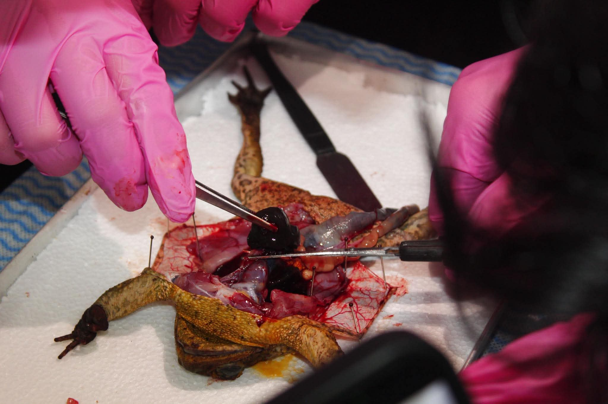
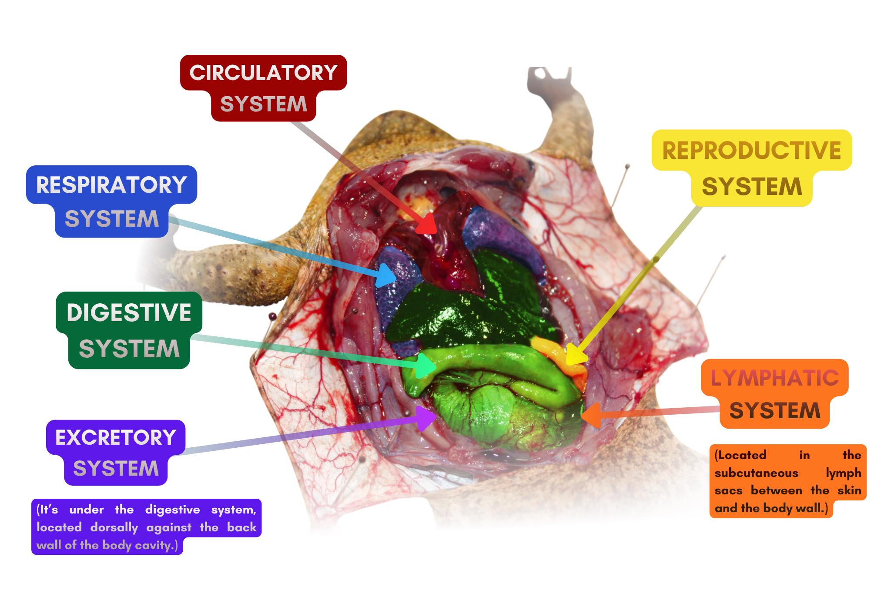
The frog has a three-chambered heart consisting of two atria and one ventricle that pumps blood through a closed loop. This system efficiently moves oxygen and nutrients to tissues while transporting waste products to the lungs and skin.
Frogs utilize a positive pressure system to breathe through their lungs, though they also exchange gases through their moist skin and mouth lining.This dual-method approach allows them to remain submerged in water for long periods while still maintaining oxygen levels.
This system starts at the mouth, where the tongue captures prey, and continues through a short esophagus into the stomach for breakdown. Nutrients are then absorbed in the small intestine, while the large intestine processes waste before it exits through the cloaca.
In males, testes produce sperm that travel through the kidneys, whereas females have large ovaries that produce eggs to be released into the water. Most frogs practice external fertilization, where the male grips the female in amplexus to fertilize the eggs as they are laid.
The primary organs are the kidneys, which filter nitrogenous wastes from the blood to create urine. This waste travels through the ureters to the urinary bladder for storage before being expelled from the body through the cloaca.
This system consists of a network of vessels and "lymph hearts" that pump fluid back into the circulatory system to maintain fluid balance. It plays a critical role in the frog's immunity by transporting white blood cells and filtering out harmful pathogens throughout the body.
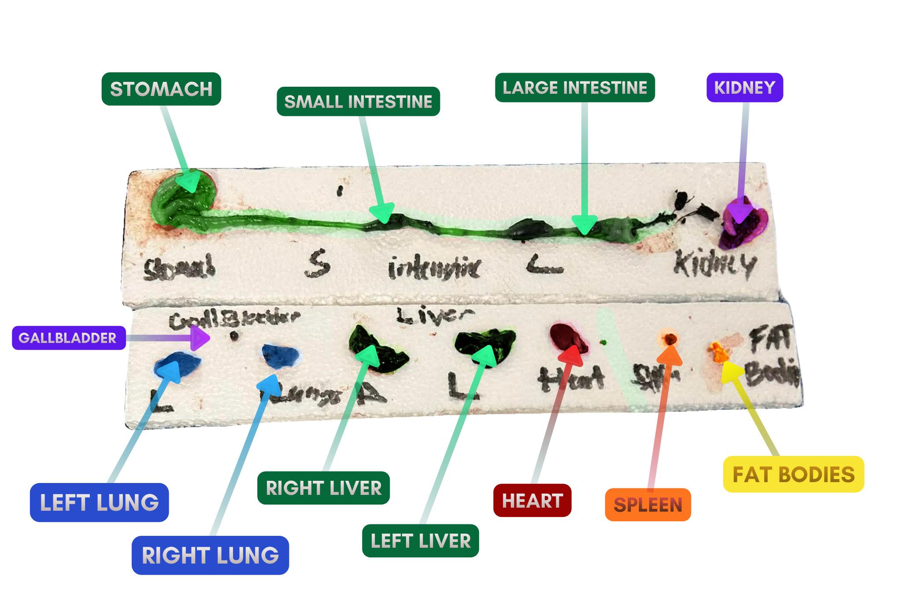
Yellow, finger-like structures that serve as the primary reservoirs for lipid storage, providing the frog with essential energy during hibernation and mating seasons.
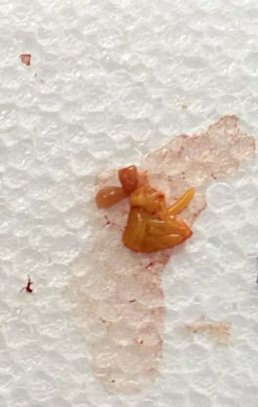
Responsible for filtering toxins from the blood and the production of bile, a fluid stored in the gallbladder that aids in the digestion of fats.
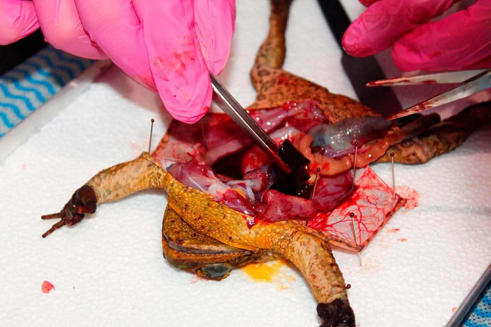
A three-chambered muscular organ that acts as the central pump of the circulatory system, directing blood to the lungs for oxygen and then out to the rest of the body.
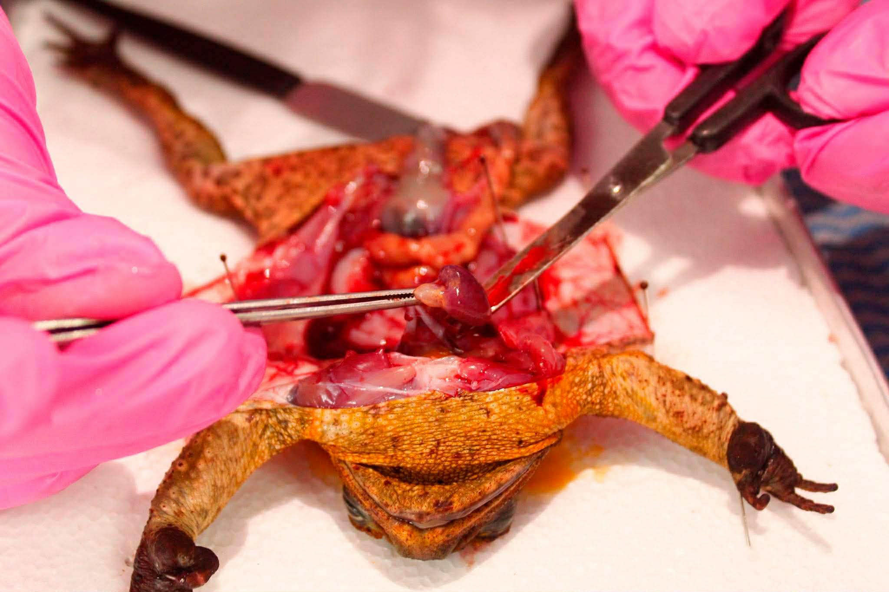
The kidneys are a pair of dark, bean-shaped organs located on the back body wall that filter waste from the blood to produce urine.
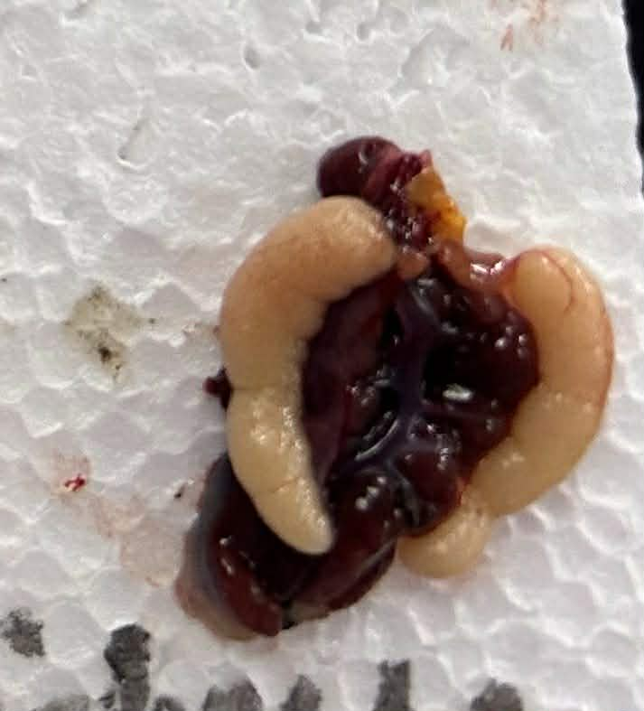
Two vascular sacs that facilitate gas exchange, though frogs often supplement their oxygen intake through their moist skin.
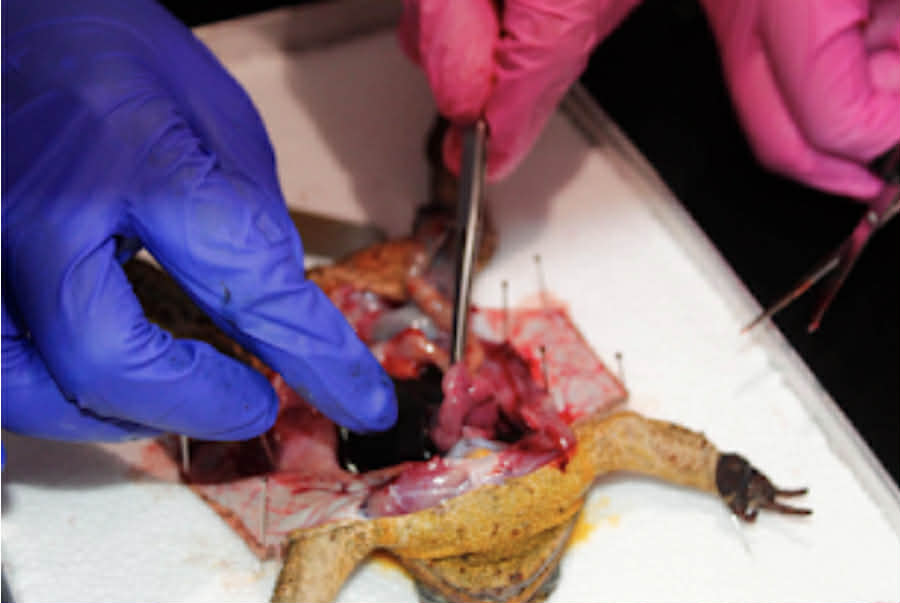
The gallbladder is a small, greenish, pea-shaped sac tucked under the liver that stores bile used for breaking down fats. During digestion, it releases this bile into the small intestine to help break down fats.
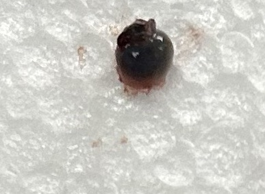
Stomach, The frog’s stomach is a J-shaped organ that stores food and continues digestion. It releases digestive juices that help break down food into smaller parts.
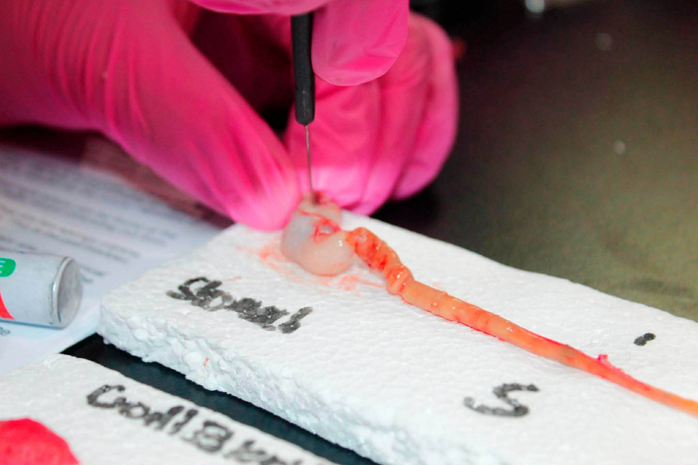
Small Intestine, The small intestine is a long, coiled tube made up of the duodenum and ileum. It is responsible for most of the digestion and absorption of nutrients.
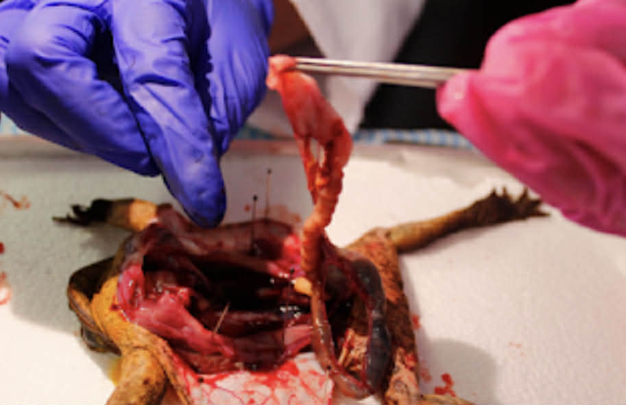
Large Intestine, The large intestine is a shorter but wider tube. Its main functions are to absorb water and salts from undigested food and store waste before it is released through the cloaca.
The spleen is a small, dark red, spherical organ found near the stomach that filters blood and supports the immune system. It functions to recycle old red blood cells and produce white blood cells to support the frog's immune system.
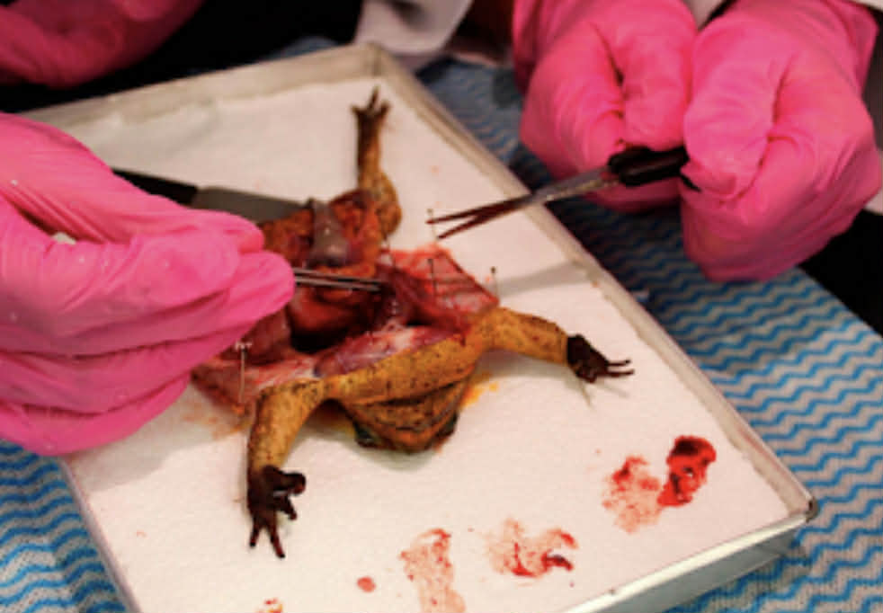
The esophagus is a short, wide, muscular tube that connects the mouth to the stomach to transport swallowed prey. It is connected to the stomach to break down the food the frog ate.

This section may contain sensitive images.